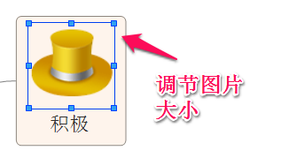
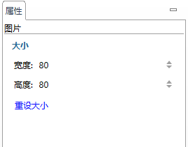

剪贴画
在XMind的剪贴画视图里面，我们为您准备了100多个高质量的图片，您可以用在您的思维图中。您可以简单地多拽这些图片到您的思维图，您也可更换以及删除您添加的图片。
添加图片到主题:- 通过点击"窗口 - 剪贴画"打开剪贴画视图，或者单击工具栏上的图片图标并选择“来自剪贴画”；
- 选中主题并双击您想添加的图片。

注意: 您可同时选中多个主题添加图片。
修改添加图片:- 右击主题所添加的图片；
- 选择“属性”修改图片大小或直接拖动图片调节图片大小。


更换图片:- 单击“视图 - 剪贴画”打开剪贴画视图或单击工具栏上的图片图标并选择“来自剪贴画”；
- 选中主题并双击您想要替换的图片。
删除图片: 右击主题图片并选择"delete"。